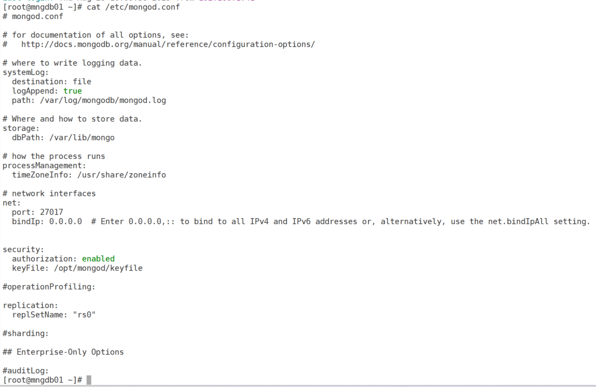
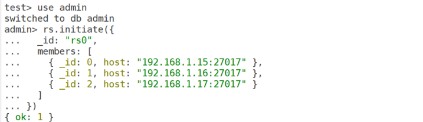
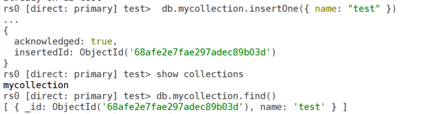
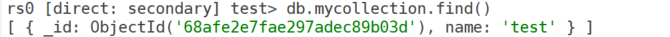
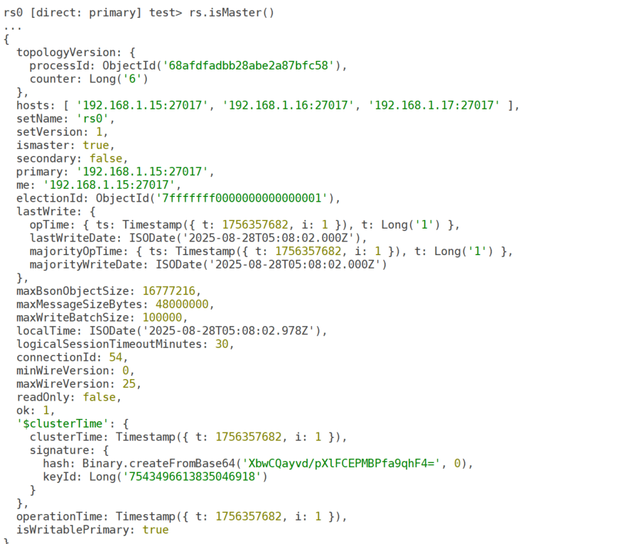
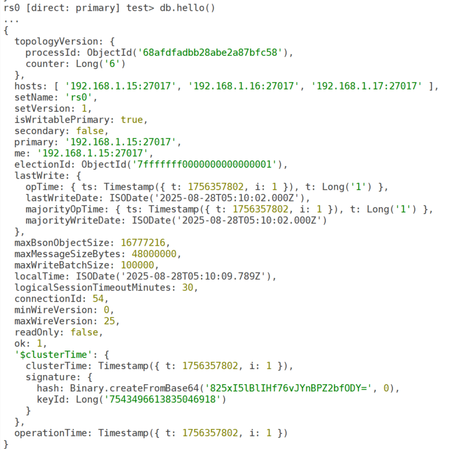
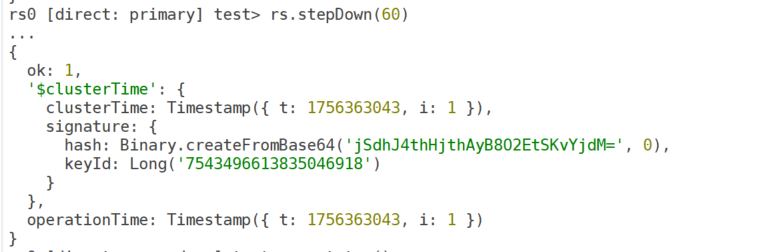
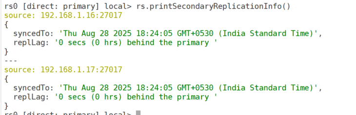

Setting Up MongoDB Replication: A Step-by-Step Guide
- Database
- MongoDB
MongoDB replication is a powerful feature that ensures high availability and data redundancy by maintaining multiple copies of your data across different servers. By configuring a replica set, you can achieve fault tolerance, enable read scaling, and simplify disaster recovery. In this blog post, we’ll walk you through the process of setting up MongoDB replication with clear, actionable steps.
What is MongoDB replication?
MongoDB replication involves creating a replica set, a group of MongoDB instances that store the same data. One node acts as the primary, handling all write operations, while secondaries replicate the data and can serve read operations. An optional arbiter can participate in elections without storing data. Replication ensures that if the primary node fails, a secondary can take over, minimizing downtime.
Let’s dive into the steps to set up a MongoDB replica set.
Step 1: Plan your replica set
Before you begin, plan your replica set architecture:
- Number of nodes: A typical replica set has at least three nodes (one primary, two secondaries). You can use an arbiter for voting if you need an odd number of members.
- Hardware: Ensure each node has adequate CPU, memory, and disk space (SSDs are recommended for performance).
- Network: Verify low-latency connectivity between nodes and open the default MongoDB port (27017) in your firewall.
- Roles: Decide which nodes will be primary, secondary, or arbiter.
Pro tip: Use separate servers, VMs or Docker containers for nodes to ensure fault tolerance.
Step 2: Install MongoDB on all nodes
Install the same version of MongoDB on each server, then validate the installed version:
mongod --versionStep 3: Configure MongoDB instances
Edit the MongoDB configuration file (usually /etc/mongod.conf) on each node
to enable replication and define the replica set name.
replication:
replSetName: "rs0" # Use the same name for all nodes
net:
bindIp: 0.0.0.0 # Allow connections from other nodes
port: 27017 # Default portCreate a keyfile for replica set communication:
openssl rand -base64 756 > /opt/mongod/keyfile
sudo chmod 400 /opt/mongod/keyfile
sudo chown mongod:mongod /opt/mongod/keyfileAdd the keyfile to the configuration:
security:
keyFile: /path/to/keyfile
Step 4: Restart MongoDB on all nodes
sudo systemctl restart mongod
sudo systemctl status mongodStep 5: Initialize the replica set
Connect to one node using the MongoDB shell (mongosh):
mongosh -u mongoadm -p --authenticationDatabase adminInitialize the replica set with all nodes:
admin> rs.initiate({
... _id: "rs0",
... members: [
... { _id: 0, host: "192.168.1.15:27017" },
... { _id: 1, host: "192.168.1.16:27017" },
... { _id: 2, host: "192.168.1.17:27017" }
... ]
... })
{ ok: 1 }
Replace the host IPs with your node addresses. After initialization, one node becomes the primary, and others become secondaries. Check the status:
rs.status()Output:
rs0 [direct: primary] test> rs.status()
{
set: 'rs0',
date: ISODate('2025-08-28T05:00:52.678Z'),
myState: 1,
term: Long('1'),
syncSourceHost: '',
syncSourceId: -1,
heartbeatIntervalMillis: Long('2000'),
majorityVoteCount: 2,
writeMajorityCount: 2,
votingMembersCount: 3,
writableVotingMembersCount: 3,
optimes: {
lastCommittedOpTime: { ts: Timestamp({ t: 1756357252, i: 1 }), t: Long('1') },
lastCommittedWallTime: ISODate('2025-08-28T05:00:52.535Z'),
readConcernMajorityOpTime: { ts: Timestamp({ t: 1756357252, i: 1 }), t: Long('1') },
appliedOpTime: { ts: Timestamp({ t: 1756357252, i: 1 }), t: Long('1') },
durableOpTime: { ts: Timestamp({ t: 1756357252, i: 1 }), t: Long('1') },
writtenOpTime: { ts: Timestamp({ t: 1756357252, i: 1 }), t: Long('1') },
lastAppliedWallTime: ISODate('2025-08-28T05:00:52.535Z'),
lastDurableWallTime: ISODate('2025-08-28T05:00:52.535Z'),
lastWrittenWallTime: ISODate('2025-08-28T05:00:52.535Z')
},
lastStableRecoveryTimestamp: Timestamp({ t: 1756357212, i: 1 }),
electionCandidateMetrics: {
lastElectionReason: 'electionTimeout',
lastElectionDate: ISODate('2025-08-28T04:59:32.082Z'),
electionTerm: Long('1'),
lastCommittedOpTimeAtElection: { ts: Timestamp({ t: 1756357161, i: 1 }), t: Long('-1') },
lastSeenWrittenOpTimeAtElection: { ts: Timestamp({ t: 1756357161, i: 1 }), t: Long('-1') },
lastSeenOpTimeAtElection: { ts: Timestamp({ t: 1756357161, i: 1 }), t: Long('-1') },
numVotesNeeded: 2,
priorityAtElection: 1,
electionTimeoutMillis: Long('10000'),
numCatchUpOps: Long('0'),
newTermStartDate: ISODate('2025-08-28T04:59:32.483Z'),
wMajorityWriteAvailabilityDate: ISODate('2025-08-28T04:59:46.127Z')
},
members: [
{
_id: 0,
name: '192.168.1.15:27017',
health: 1,
state: 1,
stateStr: 'PRIMARY',
uptime: 727,
optime: { ts: Timestamp({ t: 1756357252, i: 1 }), t: Long('1') },
optimeDate: ISODate('2025-08-28T05:00:52.000Z'),
optimeWritten: { ts: Timestamp({ t: 1756357252, i: 1 }), t: Long('1') },
optimeWrittenDate: ISODate('2025-08-28T05:00:52.000Z'),
lastAppliedWallTime: ISODate('2025-08-28T05:00:52.535Z'),
lastDurableWallTime: ISODate('2025-08-28T05:00:52.535Z'),
lastWrittenWallTime: ISODate('2025-08-28T05:00:52.535Z'),
syncSourceHost: '',
syncSourceId: -1,
infoMessage: 'Could not find member to sync from',
electionTime: Timestamp({ t: 1756357172, i: 1 }),
electionDate: ISODate('2025-08-28T04:59:32.000Z'),
configVersion: 1,
configTerm: 1,
self: true,
lastHeartbeatMessage: ''
},
{
_id: 1,
name: '192.168.1.16:27017',
health: 1,
state: 2,
stateStr: 'SECONDARY',
uptime: 90,
optime: { ts: Timestamp({ t: 1756357242, i: 1 }), t: Long('1') },
optimeDurable: { ts: Timestamp({ t: 1756357242, i: 1 }), t: Long('1') },
optimeWritten: { ts: Timestamp({ t: 1756357242, i: 1 }), t: Long('1') },
optimeDate: ISODate('2025-08-28T05:00:42.000Z'),
optimeDurableDate: ISODate('2025-08-28T05:00:42.000Z'),
optimeWrittenDate: ISODate('2025-08-28T05:00:42.000Z'),
lastAppliedWallTime: ISODate('2025-08-28T05:00:52.535Z'),
lastDurableWallTime: ISODate('2025-08-28T05:00:52.535Z'),
lastWrittenWallTime: ISODate('2025-08-28T05:00:52.535Z'),
lastHeartbeat: ISODate('2025-08-28T05:00:52.242Z'),
lastHeartbeatRecv: ISODate('2025-08-28T05:00:51.343Z'),
pingMs: Long('0'),
lastHeartbeatMessage: '',
syncSourceHost: '192.168.1.15:27017',
syncSourceId: 0,
infoMessage: '',
configVersion: 1,
configTerm: 1
},
{
_id: 2,
name: '192.168.1.17:27017',
health: 1,
state: 2,
stateStr: 'SECONDARY',
uptime: 90,
optime: { ts: Timestamp({ t: 1756357242, i: 1 }), t: Long('1') },
optimeDurable: { ts: Timestamp({ t: 1756357242, i: 1 }), t: Long('1') },
optimeWritten: { ts: Timestamp({ t: 1756357242, i: 1 }), t: Long('1') },
optimeDate: ISODate('2025-08-28T05:00:42.000Z'),
optimeDurableDate: ISODate('2025-08-28T05:00:42.000Z'),
optimeWrittenDate: ISODate('2025-08-28T05:00:42.000Z'),
lastAppliedWallTime: ISODate('2025-08-28T05:00:52.535Z'),
lastDurableWallTime: ISODate('2025-08-28T05:00:52.535Z'),
lastWrittenWallTime: ISODate('2025-08-28T05:00:52.535Z'),
lastHeartbeat: ISODate('2025-08-28T05:00:52.242Z'),
lastHeartbeatRecv: ISODate('2025-08-28T05:00:51.342Z'),
pingMs: Long('1'),
lastHeartbeatMessage: '',
syncSourceHost: '192.168.1.15:27017',
syncSourceId: 0,
infoMessage: '',
configVersion: 1,
configTerm: 1
}
],
ok: 1,
'$clusterTime': {
clusterTime: Timestamp({ t: 1756357252, i: 1 }),
signature: {
hash: Binary.createFromBase64('p8FQ9Wv+szpdzjl9nxWBWak53k0=', 0),
keyId: Long('7543496613835046918')
}
},
operationTime: Timestamp({ t: 1756357252, i: 1 })
}Step 7: Verify replication
Test replication by inserting data on the primary and checking the secondaries.
On the primary replica:
db.mycollection.insertOne({ name: "test" })
Connect to a secondary replica:
mongosh --host mngdb02 --port 27017 -u mongoadm -p --authenticationDatabase admin
Step 8: Configure optional settings
Add an arbiter (if needed):
rs.addArbiter("192.168.1.18:27017")- Set read preferences: Configure your application to read from
secondaries for load balancing (e.g.
readPreference=secondaryPreferred). - Adjust write concern: Ensure writes are replicated to a majority of nodes:
db.mycollection.insertOne({ name: "test" }, { writeConcern: { w: "majority" } })Step 9: Monitor and maintain the replica set
- Monitor health: Use
rs.status()or tools like MongoDB Atlas or Prometheus. - Check replication lag: Monitor
optimeDateinrs.status()to ensure secondaries are up to date. - Backups: Schedule regular backups with
mongodump. - Failover testing: Simulate primary node failure to verify automatic failover.
Step 10: Ways to check which node is PRIMARY
Method 1: Using rs.status()
rs.status()Method 2: Using rs.isMaster()
Deprecated in newer versions — use hello instead.
rs.isMaster()
Method 3: Using db.hello() (MongoDB 5.0+ recommended)
db.hello()
Ways to switch roles (force primary to change)
1. Step down the current primary
Connect to the current PRIMARY and run:
rs.stepDown(60)- This forces the primary to step down for 60 seconds.
- An election happens, and one of the secondaries is elected as the new primary.
- The old primary rejoins as a secondary once it can sync again.
👉 Useful when you want to test failover or move writes to another node.

rs.status()Other options include shutting down the node where the database is primary.
Monitor the lag
rs.printSecondaryReplicationInfo()
Best practices
- Use DNS names: Use hostnames instead of IPs for easier reconfiguration.
- Enable SSL/TLS: Secure data in transit with SSL in the configuration.
- Restrict access: Use firewall rules to limit MongoDB port access.
- Document everything: Maintain records of your configuration and credentials (stored securely).
- Test failovers: Periodically test failover to ensure high availability.
- Use
rs.stepDown()for a controlled role switch. - Use priority settings to influence the long-term preferred primary.
- Avoid frequent manual switching — let MongoDB handle elections automatically.
Common issues and fixes
- Node not reachable: Check network connectivity and
bindIpsettings. - Authentication errors: Ensure the keyfile is identical across nodes
and has
chmod 400permissions. - Replication lag: Optimize queries or increase hardware resources.
Conclusion
Setting up MongoDB replication is straightforward with proper planning. By following these steps, you can create a robust replica set that ensures data availability and resilience. Whether you’re running a small application or a large-scale system, MongoDB replication is a critical feature for production environments.
Happy replicating!
← All posts